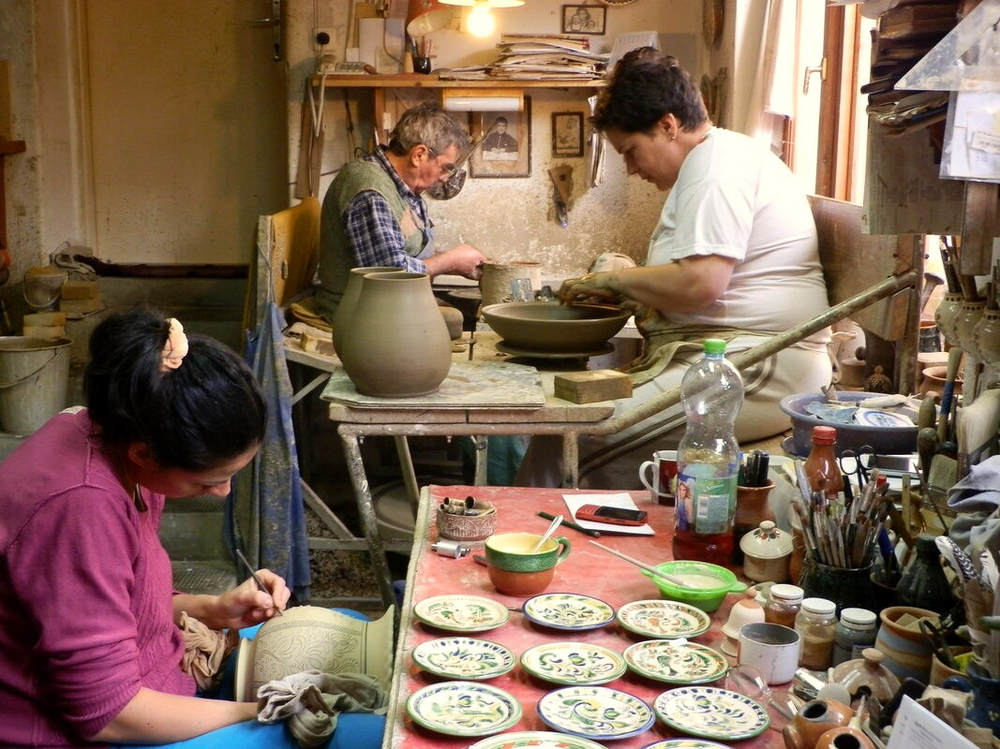

A művész és a műhely
Szűcs Imre, a Népművészet Mestere
Szűcs Imre Albert népi iparművész, egyéni vállalkozó. Tiszafüreden él és dolgozik, műhelye a Belsőkertsor utca 4/a szám alatt található.

Tiszafüred, Belsőkertsor utca 4/a
A műhely története
„Közösen dolgozunk, mindnyájunknak a tiszafüredi fazekas hagyományok jelentik a kiindulási pontot, de egyéni élményeink, tapasztalataink és hangulatunk szerint termékeink – az alkotójára jellemző – különbözőséget mutatnak. Egyikünknek sem célja az, hogy a másik termékét másolja, bár ötleteket, javaslatokat elfogadunk egymástól.”
Szűcs Imre 12 éves korától családjával együtt Tiszafüreden él. A karcagi Kántor Sándor fazekasműhelyében töltötte tanuló- és segédéveit, ahol éppen a tiszafüredi kerámiastílus sajátosságait ismerhette meg. Amikor az önálló műhelyalapítás kérdése felmerült, számára magától értetődő volt, hogy Tiszafüredet választja: ide kötötték a gyökerek mind a család, mind a hagyomány tekintetében.
1971-ben családi összefogásban elkezdte a manufakturális műhelyének építését, és 1972-ben a műhely megkezdte működését.
A műhelyben alkotó népi iparművészek: Szűcs Imre, a Népművészet Mestere, Szűcs Imréné népi iparművész, Szűcs Andrea és Szűcs Judit, a Népművészet Ifjú Mesterei. Az alkotók önálló iparművészek, akik közösen használják a műhely infrastruktúráját.
A műhelyről részletesebben a szakmai életrajzban olvasható.
A hagyomány
A tiszafüredi fazekasság
Tiszafüred híres múltbeli fazekas hagyományokra tekint vissza, de a 20. század elején a még működő fazekasok felhagytak a mesterséggel, így a húszas évektől nem volt aktív fazekas Tiszafüreden. Történt mindez annak ellenére, hogy Tiszafüred – Mezőcsát településsel mindig együtt emlegetve – névadó központja egy nevezetes tájegységi stílusirányzatnak, a tiszafüred-mezőcsáti fazekas stílusnak, és ez a gazdag, színpompás örökség éltető örökösök után kiáltott.
Nem véletlen, hogy – helybéli vállalkozó híján – más település működő fazekasműhelye karolta fel a tiszafüredi hagyaték gondozását, és aratott országos és nemzetközi sikereket e hagyományok felélesztésével. Ez volt a karcagi Kántor Sándor fazekasműhelye, amelyben Szűcs Imre tanuló- és segédéveit töltötte.
A szakmai életrajz szerint Tiszafüreden napjainkban Szűcs Imre mellett további négy fazekas népi iparművész él és alkot, akik a mesterséget Szűcs Imrétől tanulhatták meg: felesége és két lánya, Andrea és Judit, továbbá Nagyné Török Zsóka, aki 1999-ben alapított önálló műhelyt.
Szakmai életrajz
Az életút állomásai
A dátumok Szűcs Imre hivatalos szakmai életrajzából származnak (PDF-ben letölthető alább).
- 1948Karcagon született (október 26.).
- 1965Fazekas szakmunkásként végzett.1965–1972: Kántor Sándor Kossuth-díjas fazekas népművész műhelyében dolgozott.
- 1970Népi iparművész cím.Népi Iparművészeti Tanács.
- 1972Gimnáziumi érettségi; a tiszafüredi műhely megkezdte működését.A műhely építését 1971-ben kezdte el családi összefogásban.
- 1972–1996A Népművészek Háziipari Szövetkezetének tagja.
- 1984A Szocialista Kultúráért kitüntetés; Szolnok Megyei Tanács művészeti díja.
- 1987A Népművészet Mestere cím.Népi Iparművészeti Tanács.
- 1997–Egyéni vállalkozó.
- 2013A Magyar Érdemrend Lovagkeresztje.Magyarország Köztársasági Elnöke; a kitüntetést 2013-ban vehette át.
- 2017Népi iparművészi munkássága felvétele a települési és a megyei értéktárba; a Magyar Művészeti Akadémia köztestületi tagja.
Kitüntetések és elismerések
Díjak, címek
| Év | Elismerés | Odaítélő |
|---|---|---|
| 1970 | Népi iparművész cím | Népi Iparművészeti Tanács |
| 1984 | A Szocialista Kultúráért kitüntetés | Művelődés Miniszter |
| 1984 | Szolnok Megyei Tanács művészeti díja | Szolnok Megyei Tanács |
| 1987 | Népművészet Mestere cím | Népi Iparművészeti Tanács |
| 2003 | Kántor Sándor-díj | Karcag Város Önkormányzata |
| 2005 | N.E.SZ. Hagyományőrző díj | Népművészeti Egyesületek Szövetsége |
| 2005 | Az év Turisztikai Szolgáltatója a Tisza-tavi Régióban díj | Magyar Turizmus Zrt. Tisza-tavi Regionális Marketing Igazgatóság |
| 2006 | Tiszafüred Díszpolgára | Tiszafüred Város Önkormányzata |
| 2009 | Aranyfokos Kézműves Vándordíj | Magyar Kézművességért Alapítvány |
| 2009 | A Mesterek Tiszteletére díj | Kecel Város Önkormányzata |
| 2013 | A Magyar Érdemrend Lovagkeresztje | Magyarország Köztársasági Elnöke |
| 2017 | Népi iparművészi munkássága felvéve a települési értéktárba | Tiszafüred Város Önkormányzata |
| 2017 | Népi iparművészi munkássága felvéve a megyei értéktárba | Jász-Nagykun-Szolnok Megyei Önkormányzat |
| 2019 | Illésy János-díj | Nagykun Kapitányok Tanácsa |
Szakmai szervezeti tagság: Nagykunsági Népművészek Egyesülete; Jász-Nagykun-Szolnok Megyei Népművészeti Egyesület; a Magyar Művészeti Akadémia köztestületi tagja (2017). A szakmai pályázatok, versenyek és eredmények teljes jegyzéke a PDF-ben olvasható.
Küldetés és alapelv
Hogyan fogalmazza meg a munkáját
Szűcs Imre szakmai életrajza az alábbi összegzést tartalmazza munkásságáról:
„Küldetése: alkotó részese lenni a magyarok kulturális öröksége megőrzésének, ezzel hozzájárulni a magyar nemzeti identitás erősítéséhez.
Szakmai alapelve: megismerni, újraalkotni, tovább gazdagítani, továbbadni és így megőrizni a szakmai örökségünket. A népművészetnek a hitelesség az egyik alappillére.”
Fő szakmai célkitűzése, hogy a mai kor embere számára olyan kézműves kerámiaedényeket és tárgyakat készítsen, amelyek illeszkednek a modern háztartási és irodai berendezésekhez, a mindennapokban használhatók, torzítatlanul és hiteles formában magukon viselik a tiszafüredi fazekas hagyományok stílusjegyeit, és magas esztétikai igényeket elégítenek ki.
Az életrajz szerint munkássága első szakaszában, amikor a Népművészeti Háziipari Szövetkezet tagjaként önálló műhelyében nagy mennyiségű termékrendelést kellett teljesítenie, múzeumokban és magángyűjteményekben kutatta fel a régióra jellemző formákat, színeket, motívumokat, díszítéseket és technikákat. Egyéni stílusának kifejlesztésére – az életrajz szerint – nagy hatással volt a fiatalon elhunyt ifj. Nagy Mihály, 19. századi tiszafüredi fazekasmester.
Az általa megalkotott, szakmai zsűri által minősített egyedi virág-fűzér díszítmény egy ideig dombornyomatként megjelent a Szentkirályi ásványvíz műanyag palackján.
Letölthető dokumentumok
Szakmai életrajzok
- Szűcs Imre szakmai életrajzaPDF · 6 oldal
- Szűcs Imréné szakmai életrajzaPDF
- Szűcs Andrea szakmai életrajzaPDF
Szűcs Imre életútjáról szóló televíziós interjúk és videók az Írások között találhatók.